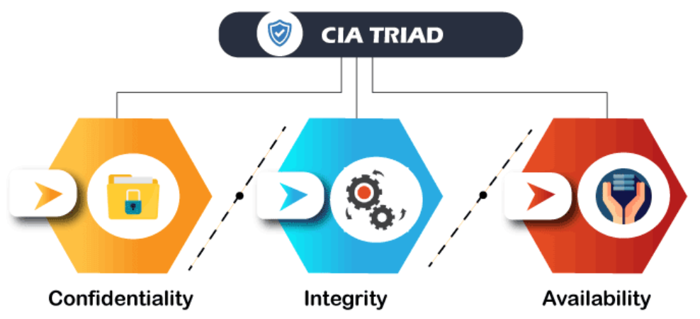
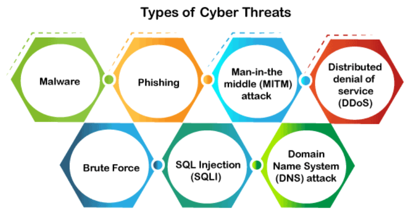

Cybersecurity is the practice of protecting computers, servers, networks, and devices from digital attacks, theft, and damage. It involves implementing a range of measures and technologies to prevent unauthorized access to systems and data, and to protect against cyber attacks and data breaches. This can include measures such as firewalls, antivirus software, secure passwords, and regular software updates.
Effective cybersecurity is crucial in today's digital age, where almost every aspect of our lives is connected to the internet in some way. It helps to maintain trust and confidence in the internet and online systems, and it is essential for protecting personal and financial information, as well as critical infrastructure such as power plants and transportation systems.
The need for cyber security arises from the increasing reliance on information and communication systems in our daily lives and the potential risks and vulnerabilities associated with these systems. Cyber threats such as malware, phishing attacks, and network intrusions can compromise the confidentiality, integrity, and availability of data and systems, leading to the loss or theft of sensitive information, financial losses, and reputational damage. Cyber security is important for individuals, businesses, and governments to protect against these threats and to ensure the safe and secure use of technology. It is also important for ensuring the reliability and resiliency of systems in the face of potential cyber attacks.
Every organization's assets are the combinations of a variety of different systems. These systems have a strong cybersecurity posture that requires coordinated efforts across all of its systems. Therefore, we can categorize cybersecurity in the following sub-domains:
The goals of cyber security are to protect information and communication systems from unauthorized access, use, disclosure, disruption, modification, or destruction. This includes protecting the confidentiality, integrity, and availability of data and systems, as well as protecting against cyber threats such as malware, phishing attacks, and network intrusions. Other goals of cyber security include ensuring the reliability and resiliency of systems, protecting against identity theft and other forms of cybercrime, and promoting the safe and secure use of technology.
A threat in cybersecurity is a malicious activity by an individual or organization to corrupt or steal data, gain access to a network, or disrupts digital life in general. The cyber community defines the following threats available today:
